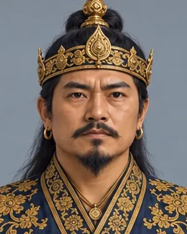

c. 1305
সুখাংফা
1293–1332 · Fourth Ahom king

Son of Subinphaa. His long war with the Kamata king (from about 1324) ended in a truce sealed by marrying the Kamata princesses Rajani and Bhajani.
The king list gives a natural death, but a footnote says he was deposed and executed.
Record confidence: medium.